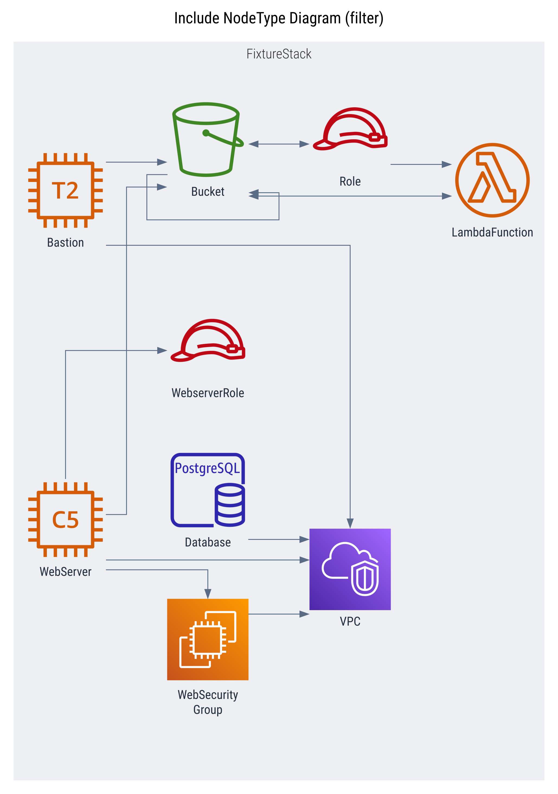

Cdk Graph Diagram Plugin


This plugin generates diagrams utilizing the cdk-graph framework.
 |
 |
Quick Start
// bin/app.ts
// Must wrap cdk app with async IIFE function to enable async cdk-graph report
(async () => {
const app = new App();
// ... add stacks, etc
const graph = new CdkGraph(app, {
plugins: [new CdkGraphDiagramPlugin()],
});
app.synth();
// async cdk-graph reporting hook
await graph.report();
})();
// => cdk.out/diagram.dot
// => cdk.out/diagram.svg
// => cdk.out/diagram.png
This plugin currently only supports
async report()generation following the above example. Make sure to wrap the cdk app with async IIFE.
Supported Formats
| Format | Status | Extends | Provider |
|---|---|---|---|
| DOT | - | Graphviz | |
| SVG | DOT | Graphviz | |
| PNG | SVG | Graphviz |
Diagram Providers
| Provider | Status | Formats |
|---|---|---|
| Graphviz | DOT, SVG, PNG | |
| Drawio | TBD: very early stage design and development |
Configuration
See IPluginConfig interface for details, and look in unit tests for additional examples.
By default the diagram plugin will generate a single "compact" preset diagram. It is capable of creating multiple diagrams each with different configurations, as well as defining the defaults to use.
Defaults Option
Changing the defaults option will modify default options for all diagrams, including the default diagram.
See IDiagramConfigBase interface for
plugin.defaultsoptions.
new CdkGraphDiagramPlugin({
defaults: {
theme: "dark",
filterPlan: {
preset: FilterPreset.NONE,
},
},
});
// => results in a single diagram that is "verbose" and "dark", since no resources are filtered
Diagrams Option
By modifying the diagrams option of the plugin you have full control over the rendering of diagrams, and can render multiple diagrams.
See IDiagramConfig interface for diagram config options.
new CdkGraphDiagramPlugin({
diagrams: [
{
name: "diagram-1",
title: "Diagram 1 (dark + compact)",
theme: "dark",
// the default `filterPlan: { preset: FilterPreset.COMPACT }` will still apply
},
{
name: "diagram-2",
title: "Diagram 2 (dark + verbose)",
theme: "dark",
filterPlan: {
preset: FilterPreset.NONE,
},
},
{
name: "diagram-3",
title: "Diagram 3 (no defaults)",
ignoreDefaults: true, // default options will not be applied (theme, filterPlan, etc)
},
],
});
Example Diagram Configs (expand below)
The below examples define individual diagram configs in the diagrams options of the plugin as described above.
new CdkGraphDiagramPlugin({
diagrams: [
// ... insert diagram config(s) here - see below for examples
],
});
Presets
Preset: compact

{
name: "compact",
title: "Compact Diagram",
filterPlan: {
preset: FilterPreset.COMPACT,
},
},
Preset: verbose

{
name: "verbose",
title: "Verbose Diagram",
format: DiagramFormat.PNG,
ignoreDefaults: true,
},
Focus
Focus: hoist

{
name: "focus",
title: "Focus Lambda Diagram (non-extraneous)",
filterPlan: {
focus: {
filter: {
filter: (store) =>
store.getNode(getConstructUUID(app.stack.lambda)),
},
},
preset: FilterPreset.NON_EXTRANEOUS,
},
ignoreDefaults: true,
},
Focus: no hoist

{
name: "focus",
title: "Focus Lambda Diagram (non-extraneous)",
filterPlan: {
focus: {
filter: {
filter: (store) =>
store.getNode(getConstructUUID(app.stack.lambda)),
},
noHoist: true,
},
preset: FilterPreset.NON_EXTRANEOUS,
},
ignoreDefaults: true,
},
Filters
Filter: Include specific cfn resource types

{
name: "includeCfnType",
title: "Include CfnType Diagram (filter)",
filterPlan: {
filters: [
{
graph: Filters.includeCfnType([
aws_arch.CfnSpec.ServiceResourceDictionary.EC2.Instance,
/AWS::Lambda::Function.*/,
"AWS::IAM::Role",
]),
},
{ store: Filters.compact() },
],
},
},
Filter: Exclude specific cfn resource types

{
name: "excludeCfnType",
title: "Exclude CfnType Diagram (filter)",
filterPlan: {
filters: [
{
graph: Filters.excludeCfnType([
/AWS::EC2::VPC.*/,
aws_arch.CfnSpec.ServiceResourceDictionary.IAM.Role,
]),
},
{ store: Filters.compact() },
],
},
},
Filter: Include specific graph node types
{
name: "includeNodeType",
title: "Include NodeType Diagram (filter)",
filterPlan: {
filters: [
{
graph: Filters.includeNodeType([
NodeTypeEnum.STACK,
NodeTypeEnum.RESOURCE,
]),
},
{ store: Filters.compact() },
],
},
},
Filter: Exclude specific graph node types

{
name: "excludeNodeType",
title: "Exclude NodeType Diagram (filter)",
filterPlan: {
filters: [
{
graph: Filters.excludeNodeType([
NodeTypeEnum.NESTED_STACK,
NodeTypeEnum.CFN_RESOURCE,
NodeTypeEnum.OUTPUT,
NodeTypeEnum.PARAMETER,
])
},
{ store: Filters.compact() },
],
},
},
Themes
Theme: Dark
{
name: "Dark",
title: "Dark Theme Diagram",
theme: theme,
},
Theme: Dark - render service icons

{
name: "dark-services",
title: "Dark Theme Custom Diagram",
theme: {
theme: theme,
rendering: {
resourceIconMin: GraphThemeRenderingIconTarget.SERVICE,
resourceIconMax: GraphThemeRenderingIconTarget.CATEGORY,
cfnResourceIconMin: GraphThemeRenderingIconTarget.DATA,
cfnResourceIconMax: GraphThemeRenderingIconTarget.RESOURCE,
},
},
},
Theme: Dark - verbose

{
name: "dark-verbose",
title: "Dark Theme Verbose Diagram",
ignoreDefaults: true,
theme: theme,
},
Future Enhancements
- [ ] Improve image coverage and non-image node rendering
- [ ] Add drawio support
- [ ] Add common filter patterns and helpers
- [ ] Enable generating diagrams outside of synthesis process (maybe CLI)
- [ ] Implement interactive diagram, with potential for dynamic filtering and config generation
- [ ] Support using interactive diagram as config generator for other plugins (or as separate plugin that depends on this)
Inspired by cdk-dia and cfn-dia with